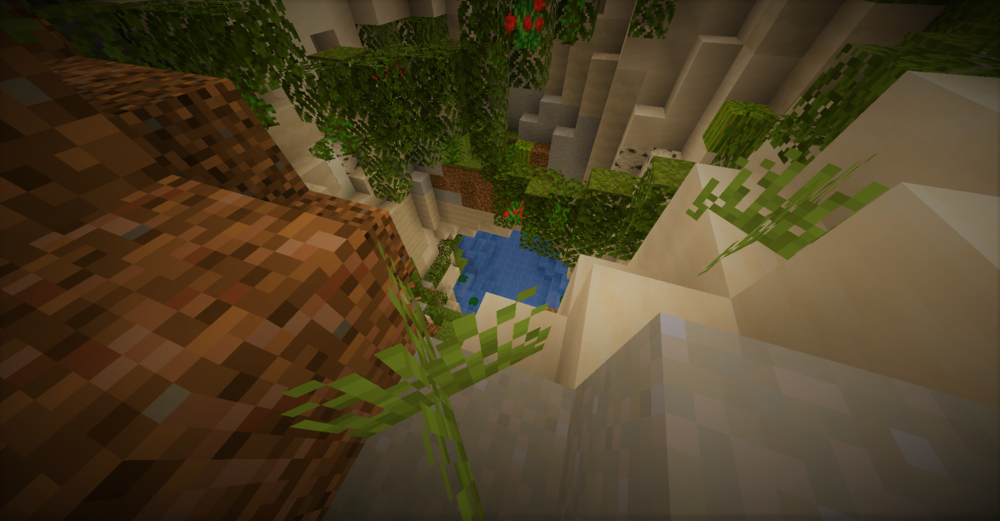
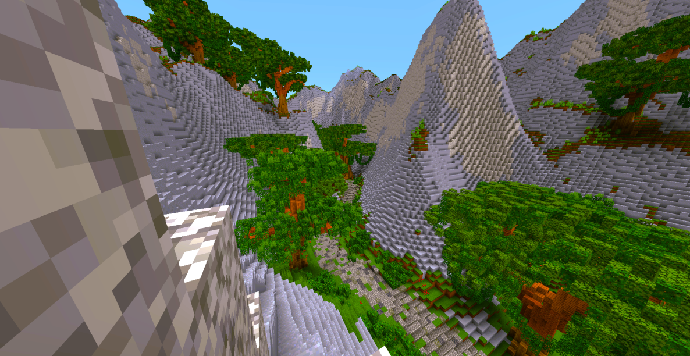
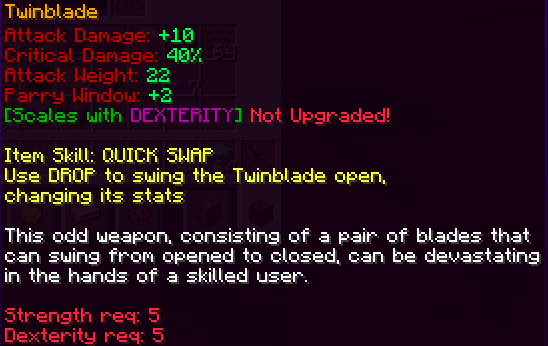

Other Projects
Curse of Binding
The Curse of Binding is a challenging RPG Minecraft adventuremap (1.19.4) with soulslike elements.

After waking up in a cave with your memories gone, you find a tomb with
a mysterious helmet inside. Upon wearing it it becomes bound to your
head, forcing you to venture through the Gateways to learn the secrets behind
your burden, and eventually learn of its ultimate purpose...

The Curse of Binding features 4 huge levels, 8 brutal boss fights, 20+ unique
weapons (many of which have special abilities), custom combat mechanics, quests, an
original noteblock soundtrack, a levelling system and much more (with more coming every update)!

Arena Battle 4
Returning to Arena BattleRealm of Uz member Jackkoh first created Arena Battle on a
Hypixel SMP for him and his friends; the minigame consisted of
villagers with custom item trades and a round-based combat
system where you progressively gained more items.
One day, Jackkoh invited fellow Realm of Uz members Val and
Lifey to play Arena Battle, who felt that the concept could be
further expanded upon and decided to create their version of the
game, which came with automated systems, cosmetics, custom
items, and a custom texture pack. Arena Battle 2 gained quite a
bit of traction within the guild, and Lifey invited other guild
members to help with the project. The team included Namakobushi,
Etherweaver, Earthbrine, and Jacckoh members. Unfortunately, the
command blocks used up too much memory, and Hypixel SMP ended up
resetting several chunks and destroying the server.
After this reset, Val and Lifey decided on their most ambitious
project: revamping the entire Arena Battle experience and moving
it onto a private server. Arena Battle 3 brought new improvements,
such as more dynamic settings, interesting custom items, and plans
for multiple maps. Arena Battle 3 eventually ran out of steam as the
guild members were busy with other projects, which caused Arena
Battle 3 to die out slowly.
This brings us to today, where Endistic, Developer of Xyraith and The
UZBRPG, decided to revive the Arena Battle genre with Arena Battle 4
on Diamondfire and create a brand new Minecraft Battle Royal experience.